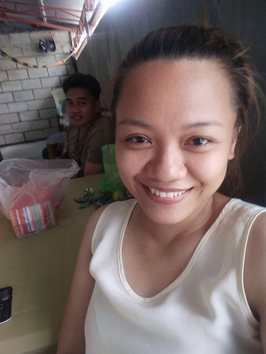
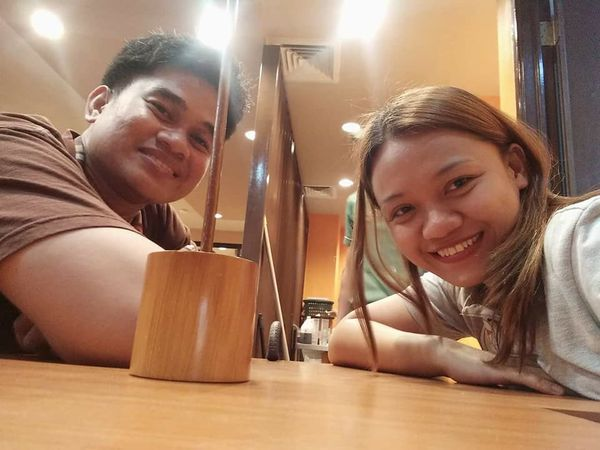
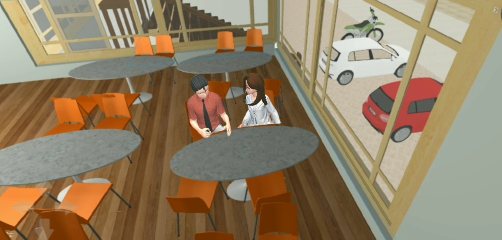
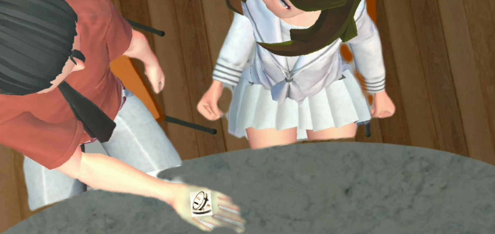
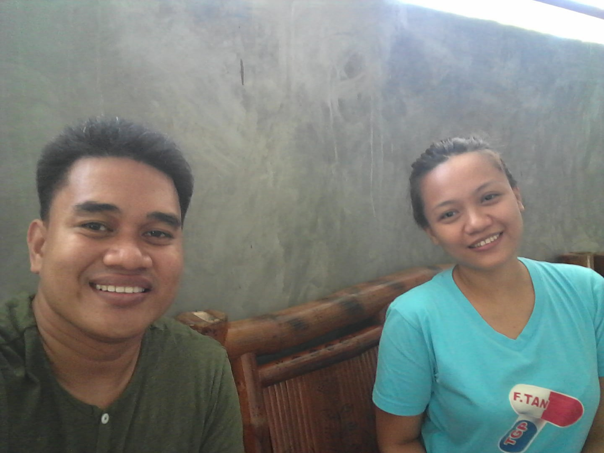

Nagsimula ang kuwentong ito noong una kong makita ang mama mo. Una ko siyang nakita sa MSR Dialysis Center kung saan nagda-dialysis ang lola mommy mo. Dalawang beses sa isang linggong nagda-dialysis ang lola mommy mo at naka schedule siyang mag dialysis sa araw na iyon. Hindi ko matandaan yung eksaktong araw pero Pebrero iyon ng taong dalawang libo at labing walo. Ako ang nakatokang magbantay sa lola mommy mo nung araw na iyon. Nakita ko ang mama mo nung papasok na kami sa MSR.
Pagkatapos nun nagpakilala sa kanya ang lola mommy mo. Sa katunayan niyan ang lola mommy ang gumawa ng unang hakbang para makuha ang mesenger name ng mama mo. Tuwang-tuwa naman ako dahil gustung-gusto ko ang mama mo. Naging magka-chat kami ng mama mo. Lagi akong nagpupunta sa MSR kahit hindi pa naka-schedule magdialysis ang lola mommy mo. Hinihintay ko ang mama mo na lumabas galing sa trabaho para ihatid o kaya naman minsan kumakain muna kami bago sya umuwi.
Ito yung unang beses na dumalaw ako sa bahay ng mama mo.
Heto yung larawan ng unang date namin ng mama mo sa Mang Inasal Magic Star mall.
Ika sampu ng Mayo, taong dalawang libo at labing walo nung sinagot ako ng mama mo. Pagkalabas ng mama mo galing sa trabaho, niyaya ko syang kumain sa Jolibee Magic Star mall.
Habang kumakain kami, may pinakita akong singsing sa kanya. Tapos tinanung ko sya kung pwede ko ba siyang maging girlfriend. Sinagot naman nya ako nung araw na yun.
Kuha naman ito sa bahay ng mama mo noong ika-labing tatlo ng Mayo, dalawang libo't labing walo.
